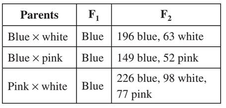

The tiny blue-eyed Mary flower is often one of
the first flowers seen in the spring in some regions
of the United States. The flower is normally blue,
but sometimes a white or pink flower variation is
found.
The following data were obtained after several
crosses.

Which of the following statements best explains
the data?
Approach
We can eliminate the first three choices.
If flower color were determined by the environment, we would not see the 3:1 phenotypic ratio in the first two crosses.
There is no evidence that the stages of the flowers were considered in the crosses. Again, the 3:1 ratio highlights an inheritance pattern characteristic of a simple mendelian cross between a heterozygous and homozygous individual.
Vegetative propogation is a form of asexual reproduction, and we would expect parental generations to have the same phenotype of the offspring.
The evidence points to an interited trait. There does seem to be some interaction with another gene to obtain the results in the 3rd cross.